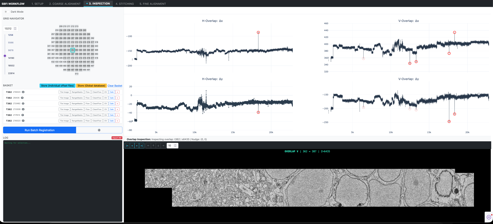

3. Interactive Inspection & Curation¶
The Inspection tab is the interactive quality control and curation center of em_inspection. In multi-terabyte serial block-face datasets, automated algorithms can occasionally produce suboptimal offsets when tile overlaps fall on featureless resin, blood vessel lumens, or areas disrupted by knife marks.
The Inspection dashboard provides a human-in-the-loop visual interface to track drift across tens of thousands of sections, stage suspect offsets using box multi-selection, apply the author's custom coarse offset refinement method (both for single tile pairs and across large batches), visually verify ultrastructural alignment, and perform sub-pixel manual nudging.

Layout Overview¶
The interface is divided into two primary columns: 1. Left Sidebar: Grid Navigation, Curation Shopping Basket, and Event Logs. 2. Right Canvas: Quad Drift Curves and the High-Resolution Overlap Inspection Viewer.
1. Grid Navigator¶
The Grid Navigator allows you to explore the 3D volume along the \(Z\)-axis and select specific physical tiles in the 2D mosaic:
- Section Input & Slider: Jump directly to any physical section cut (e.g.,
13212) or drag the vertical slider across dataset milestones (e.g.,1250to22814). - Interactive Mosaic Grid: A 2D schematic representing the physical tile layout of the selected section.
- Clicking any tile number (such as
362, highlighted in cyan) selects it as the active tile. - The Quad Drift Plots immediately update to show the full \(Z\)-trace for that specific tile's horizontal (\(H\)) and vertical (\(V\)) overlaps across the entire experiment.
Keyboard Navigation Shortcuts¶
| Key | Action |
|---|---|
| w | Move to the next section (\(Z + 1\)) |
| s | Move to the previous section (\(Z - 1\)) |
2. Quad Drift Curves & Box Multi-Selection¶
The upper right canvas renders four synchronized interactive Plotly charts tracking translational displacement vectors over thousands of sections:
- H-Overlap: \(\Delta x\): Lateral displacement for horizontal tile neighbors.
- H-Overlap: \(\Delta y\): Shear displacement for horizontal tile neighbors.
- V-Overlap: \(\Delta x\): Shear displacement for vertical tile neighbors.
- V-Overlap: \(\Delta y\): Longitudinal displacement for vertical tile neighbors.
Staging Offsets into the Basket¶
To curate suspect offsets:
- Rectangle / Box Selection Tool: Using Plotly's box selection mode in the chart toolbar, click and drag a rectangular region over any cluster of points on the drift curve. All selected tile-section pairs are immediately staged into the Basket in a single operation.
- Single Point Click: Clicking directly on an individual data point in any quadrant adds that specific tile overlap pair to the Basket.
3. The Basket & Author's Coarse Offset Refinement¶
The Basket serves as the staging queue for reviewing, refining, and committing tile offsets:
[T362 Z18323 H] [Tile Image] [RangeMasks] [Flow] [CleanFlow] [OV] [Calc] [x]
[T362 Z6435 V] [Tile Image] [RangeMasks] [Flow] [CleanFlow] [OV] [Calc] [x]
Diagnostic Tools per Staged Item¶
Tile Image: Displays the raw EM tile image to check for charging, debris, or knife stripes.RangeMasks: Displays the intensity threshold mask to verify if untextured resin margins were correctly identified.Flow: Visualizes the raw dense optical flow vector field across the overlap ribbon.CleanFlow: Visualizes the filtered vector field after peak-ratio, sharpness, and magnitude filtering.OV(Overlap Viewer): Loads the overlapping tile pair into the interactive inspection viewer below.Calc: Recomputes the shift vector using the Author's Overlap-Evaluation Coarse Offset Refinement method.x: Removes the item from the curation basket.
Author's Overlap-Evaluation Coarse Offset Refinement¶
Rather than re-running a naive global Fourier cross-correlation (which can latch onto repetitive knife chatter or background noise), the author's custom refinement algorithm (refine_coarse_offset_eval_ov) evaluates actual image consistency across candidate displacement grids:
- Shift Grid Evaluation: The algorithm constructs a localized spatial search grid around the initial offset estimate.
- Overlap Quality Metric: For each candidate offset, the overlapping region is extracted and evaluated using seam structural similarity / consistency metrics.
- Sub-Pixel Grid Interpolation: The computed quality landscape is interpolated to extract the refined displacement vector.
Single-Pair & Batch Refinement Modes¶
- Single Item Refinement (
Calc): Refines an individual tile overlap on demand with instant feedback in the Overlap Viewer. - Batch Refinement (
Run Batch Registration): Iterates across all items currently staged in the Basket, automatically refining each coarse offset vector using the configured search radius (max_ext), stride, and pyramidal levels.
Persisting Curated Offsets¶
Once offsets are verified or refined:
Store (Global database): Commits the updated shift vectors directly into the DuckDBcoarse_offsets.dbregistry.Store (Individual offset files): Reconstructs the 4D \((2, 2, Y, X)\) tensor and writes section-levelcx_cy.jsonfiles for distributed workers.Clear Basket: Empties the current staging queue.
4. Overlap Inspection Viewer & Manual Nudging¶
When an overlap is loaded (e.g., OVERLAP V | 362 <-> 387 | Z=6435), the bottom canvas displays a blended high-resolution composite of the seam:
- Ultrastructure Verification: Inspect fine subcellular landmarks—such as double nuclear membranes, mitochondrial cristae, synaptic vesicles, and myelin sheaths—crossing the boundary.
- Visual Alignment Feedback: Seamless alignment indicates accurate offsets; doubling or shearing indicates residual shift.
Sub-Pixel Manual Nudging¶
For cases requiring direct human adjustment, use the nudge controls:
- Navigation Controls:
|<,<<,>>,>|cycle through items in the basket. - Directional Nudge Buttons:
←,↑,↓,→shift the active tile by the configured step size. - Step Size Field: Sets the displacement per click (default:
10pixels).
Keyboard Shortcuts for Nudging¶
| Keystroke | Direction | Displacement |
|---|---|---|
| ← (Left Arrow) | \(\Delta x - \text{step}\) | Shifts tile left |
| → (Right Arrow) | \(\Delta x + \text{step}\) | Shifts tile right |
| ↑ (Up Arrow) | \(\Delta y - \text{step}\) | Shifts tile up |
| ↓ (Down Arrow) | \(\Delta y + \text{step}\) | Shifts tile down |
The viewer updates dynamically with every keystroke, allowing sub-pixel precision before saving back to the database.
Next Steps¶
With coarse offsets curated and refined, proceed to 4. Section Stitching to generate seamlessly warped 2D mosaics.